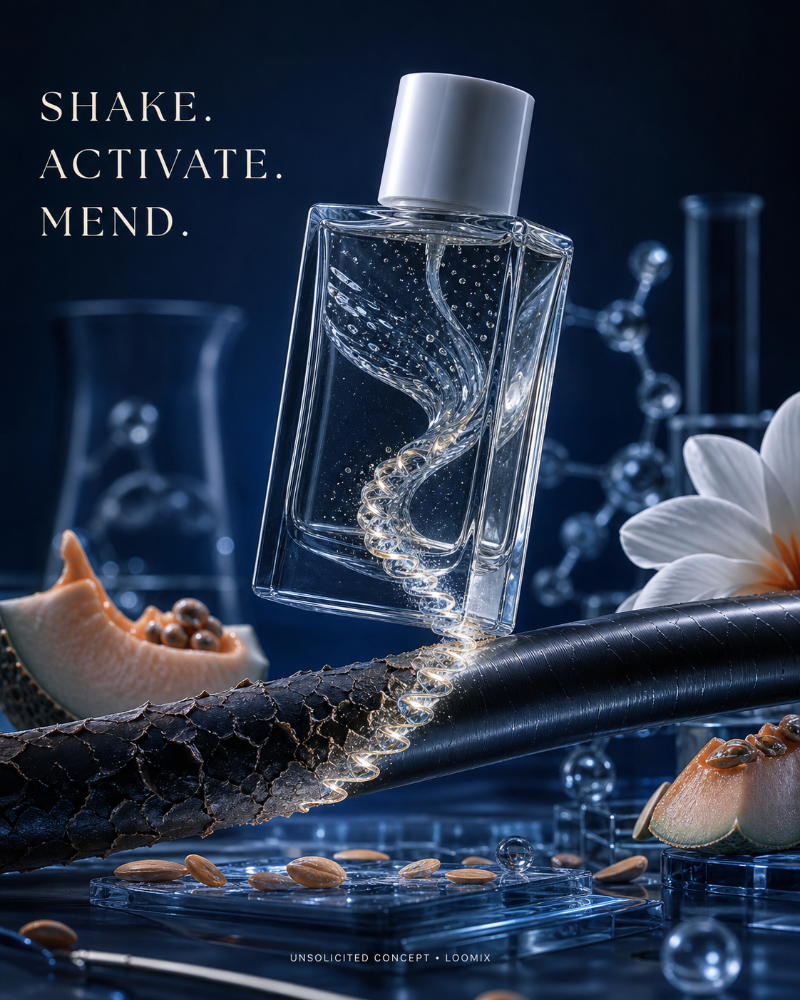

Concept created by LoomixUnsolicited concept
Virtue LabsReels + TikTok9:168 seconds
Healing Oil — Shake, Activate, Mend
Clear oils and keratin-like ribbons spiral together after a shake, then form a luminous seam that closes visible gaps in one damaged strand.
Create the full adOpen product pageAI-generated visual direction

Concept art for discussion only. Product and brand belong to Virtue Labs.
Hooks
Shake. Activate. Mend.Oil meets keratin.Close the gap on damage.
Six-shot storyboard
- Open on two clear phases in the bottle.
- Shake them into a luminous spiral.
- Reveal one cracked hair strand.
- Pull the spiral into a zipper-like seam.
- Close the gaps and reveal polished hair.
- End on bottle, repaired strand, hook, and CTA.
Caption
A shake-to-activate repair story that turns biotech and nourishing oils into one tactile social transition.
LoomixLoomix turns one product photo into a storyboard, short video direction, captions, and ready-to-post ad copy.